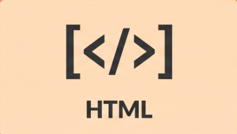
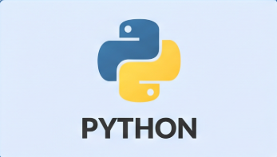
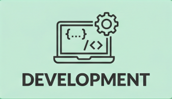

Sobre mí
Ingeniero Civil | Desarrollador Software
Mi trayectoria se basa en la disciplina y el pensamiento lógico. Gracias a mi enfoque y rendimiento académico, cursé mi carrera de Ingeniería Civil completamente becado, una experiencia que consolidó mi capacidad para resolver problemas complejos y gestionar proyectos con precisión. Mi mayor fortaleza es la agilidad para adquirir y transmitir información. Me capacito en nuevas tecnologías en tiempo récord y tengo la habilidad de explicar conceptos técnicos de forma clara y accesible. Actualmente, aplico este "superpoder" en el desarrollo de software, donde trabajo con un stack centrado en Python para la lógica, y HTML, CSS (Sass) y JavaScript para crear interfaces funcionales y bien estructuradas.
Proyectos
-

Pagina de Riwi -

Students Management System -

About me Github